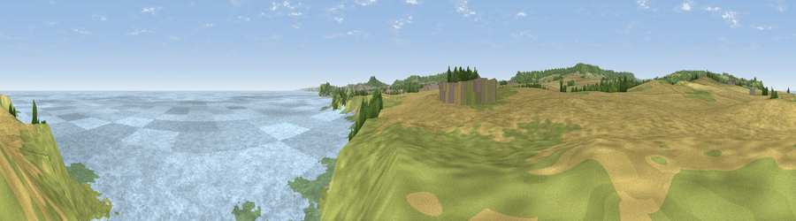

Viewpoint near Burniston
#6542 in England · top 19% of its area beats it · near BurnistonThe view, rendered

A 360° render of this exact spot computed from the terrain model, tree cover and land cover — summer colours, afternoon light, calibrated against photographs of famous viewpoints. Real trees, hedges and buildings will differ in detail.
The panorama
Grey silhouette: terrain skyline in each direction (720 bearings, Earth curvature and refraction included). Dashed green: skyline with trees (+15 m) and buildings (+8 m) as obstacles. Blue strip: how far the ground is visible on each bearing.
Where the view opens
Wedge length = distance to the farthest visible ground on that bearing (vegetation-aware). Rings at 10, 25 and 50 km.
What fills the view
50% water · 23% cropland · 13% wetland · 10% grassland · 3% woodland ·
Angular shares of the visible panorama (visual magnitude), not map area. Landscape diversity 0.58 (0–1 Shannon).
Key numbers
More beautiful places nearby
The staircase of upgrades: each row has a higher view potential than everything closer. Driving times are estimates from straight-line distance, calibrated against real road routing — check an actual route before setting out.
| Place | Direction | Drive | Score |
|---|---|---|---|
| Viewpoint near Cloughton | NNW · 4 km | ~9 min | 78.1 |
| Viewpoint near Burniston | W · 4 km | ~9 min | 78.3 |
| Viewpoint near Staintondale | NNW · 5 km | ~11 min | 80.4 |
| Viewpoint near Ravenscar | NNW · 9 km | ~18 min | 82.7 |
| Viewpoint near Ravenscar | NNW · 11 km | ~20 min | 87.3 |
| Viewpoint near Ravenscar | NNW · 12 km | ~22 min | 90.0 |
| Viewpoint near Easington | NW · 39 km | ~59 min | 90.2 |
| The Knoll | SSW · 431 km | ~406 min | 91.0 |
54.31841, -0.42074 · source: screening · position refined by local search. Computed location — check access rights before visiting.